| 日付 | 2025年4月29日（火） - 2025年5月2日（金） | ||||||||
|---|---|---|---|---|---|---|---|---|---|
| 山域 | 九州の山 | ||||||||
| メンバー | 単独 | ||||||||
| 山行形態 | 3泊4日避難小屋泊、キャンプ | ||||||||
| アクセス | 電車、飛行機、バス | ||||||||
| ルート (Map2) |
|
4日目
5時起床。昨夜はものすごい雨だったが、雲はだいぶなくなっているようだ。
雷注意報が出ていたが、雷が鳴らなくてよかった。
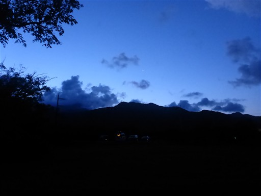
あれだけ雨が降ったのに、明らかな窪地を除いて水が溜まっていない。
非常に水はけのよいキャンプ場だ。
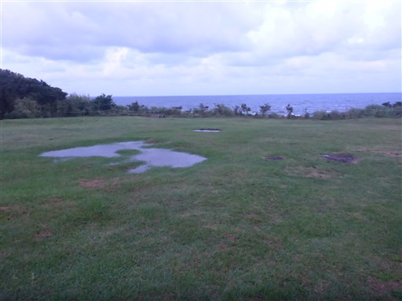
キャンプ場から見上げる鋭い山容の七五岳。
まだ真ん中の高い山々には雲がかかっている。
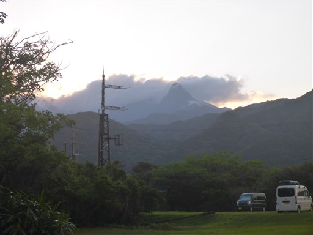
昨日、エスマートで購入した緑茶。
東京シリーズが当たるとか、いったいいつの話をしているのか…
もちろん賞味期限は切れていない。
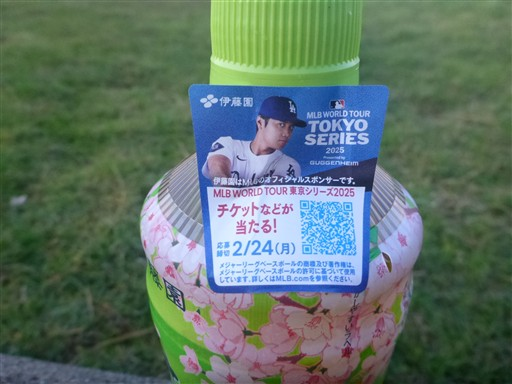
1泊お世話になった青少年旅行村を後にする。
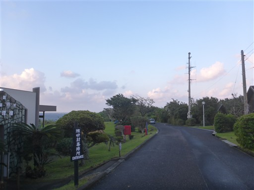
栗生川に架かる栗生橋。
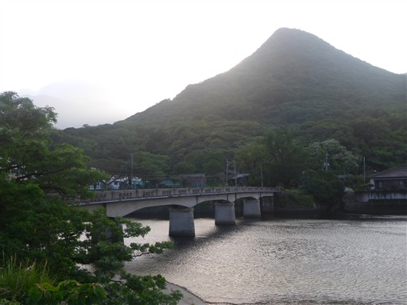
栗生橋バス停で始発のバスに乗る。始発は6:39だ。
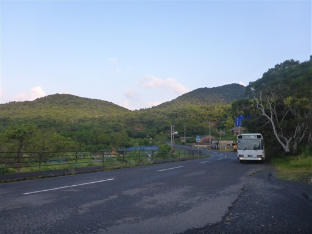
最初は乗客は自分一人だったが、次々と観光客と通学の小学生が乗ってくる。
高級ホテルでどれだけ人が乗ってくるかと思ったら、小学生一人が乗ってきたのみ。
ホテルの宿泊者は朝が遅いのだろう。

車窓から、これから登るモッチョム岳がよく見える。鋭い岩峰だ。
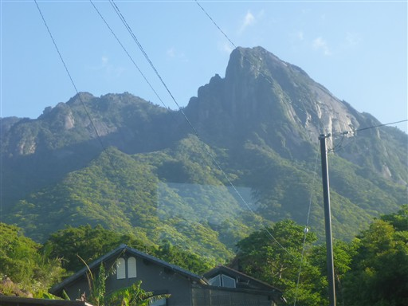
原バス停に到着。標高40m。
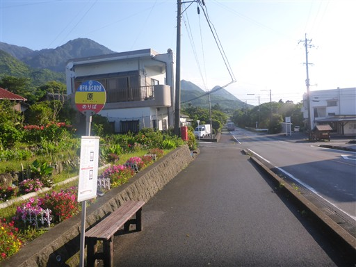
ここに小学校があるようで、小学生たちが降りて小学校に向かっていく。
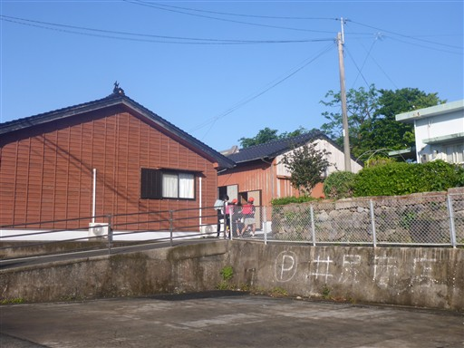
山河公園のこいのぼりの奥にモッチョム岳が見えている。
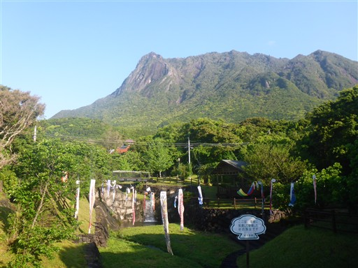
登山口まで延々と車道を歩く。
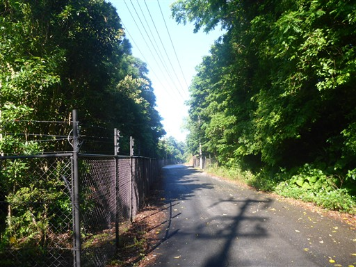
シダの葉が陽の光を浴びて光っている。
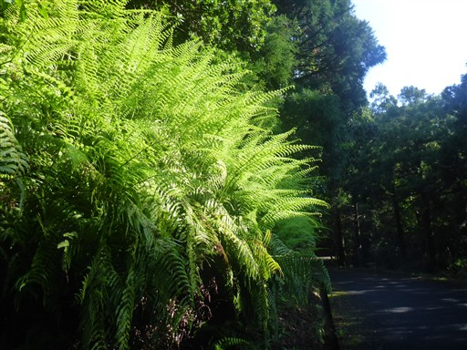
千尋の滝の駐車場に到着。ここがモッチョム岳の登山口だ。
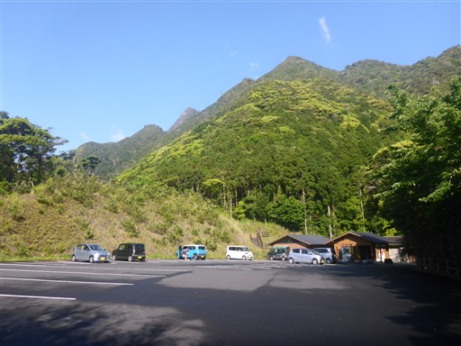
展望台から海を眺める。
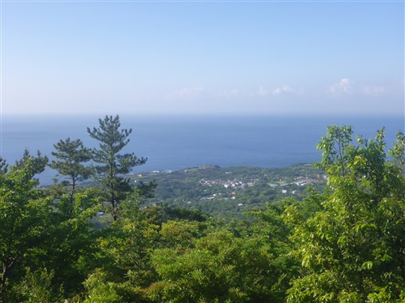
売店の裏に、水を含んで重くなったテントと着替えた服だけデポしておくことにする。
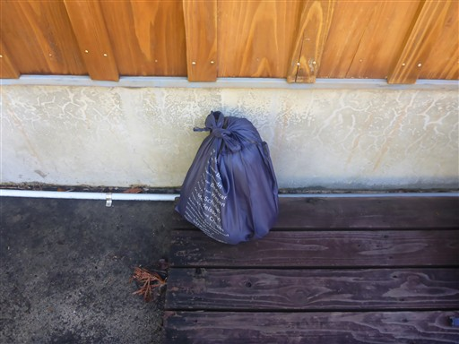
モッチョム岳登山口。
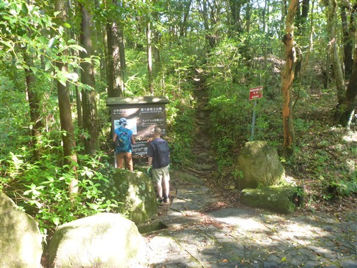
登山道はよく整備されている。最初は急登が続く。
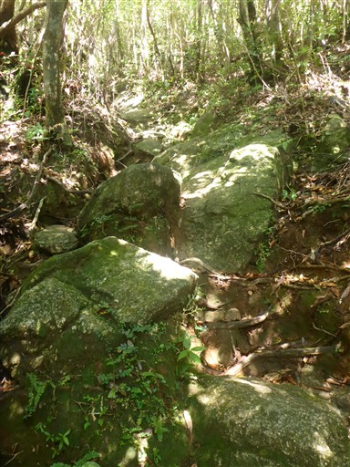
小さな沢を渡る。屋久島は本当に水が豊富だ。
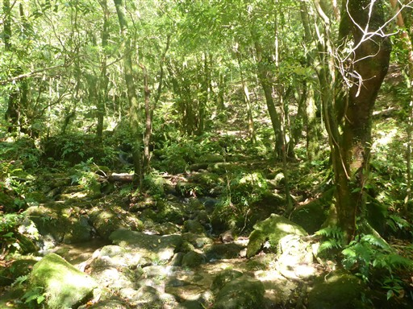
万代杉に到着。縄文杉よりは小さいが、間近で眺めることができる。
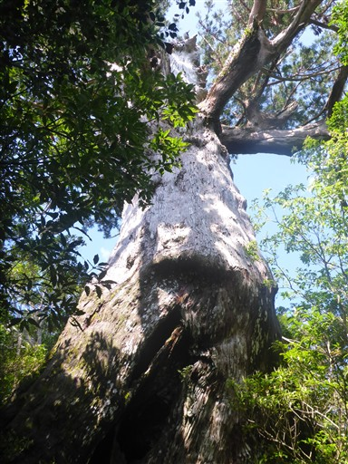
幹には空洞がある。全体が白っぽくなっており、かなりの老木だ。
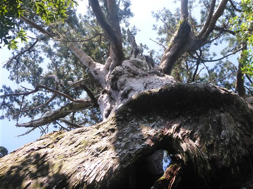
岩場。立派なロープが掛かっている。
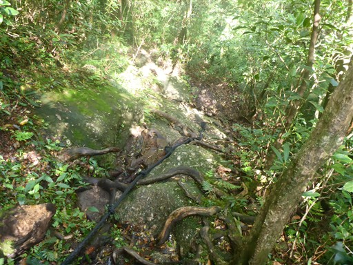
周囲は緑一色だ。
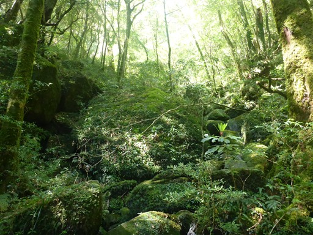
モッチョム太郎。樹木に覆われて、上部はよく見えない。
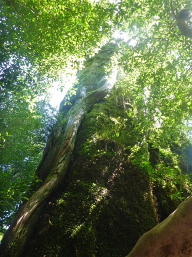
幹にいろいろな植物が着生している。
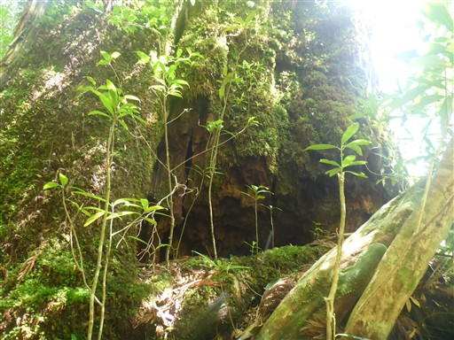
シダ植物に覆われた木。
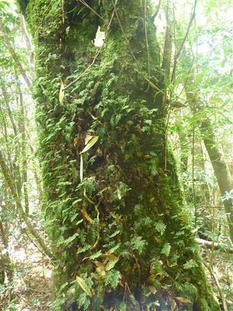
急斜面の登山道は続く。木の根につかまって登っていく。
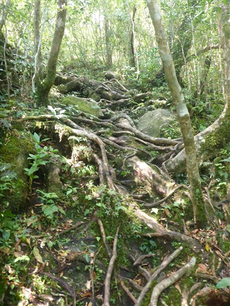
神山展望所に到着。海は見えるが、展望所というほどの展望は広がらない。
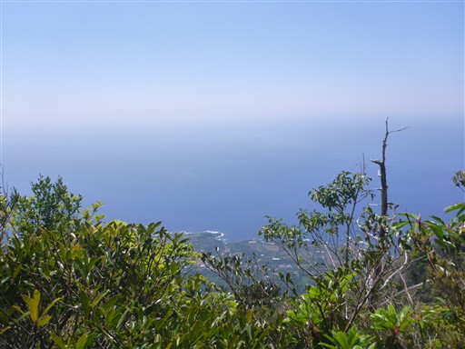
手足を使う場所が多く、ストックは片づけて歩いていく。
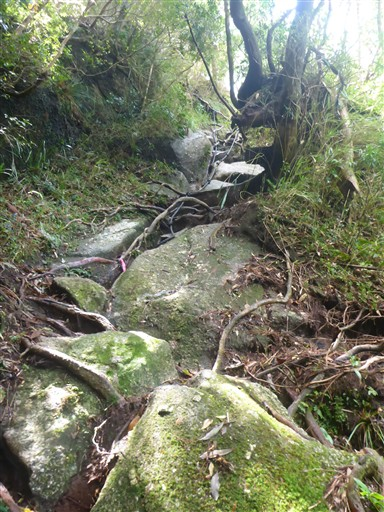
目指すモッチョム岳の岩峰が見えてきた。
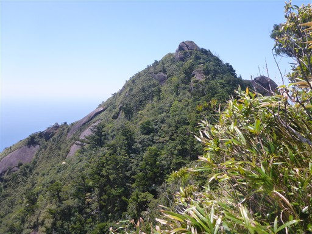
目の前に見えるのは凄まじい岩壁。
縦の筋はいったい何だろう？
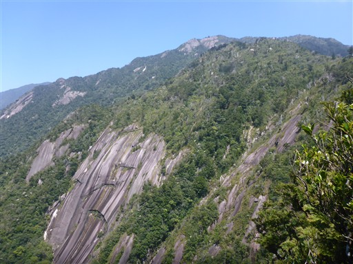
道はかなり細い。落っこちないように気を付けて歩く。
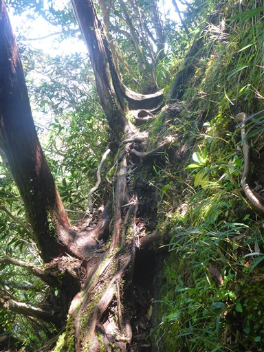
山頂直下の岩場。傾斜は緩いので簡単に登れる。
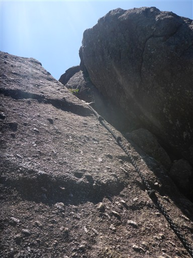
モッチョム岳山頂に到着。標高940m。
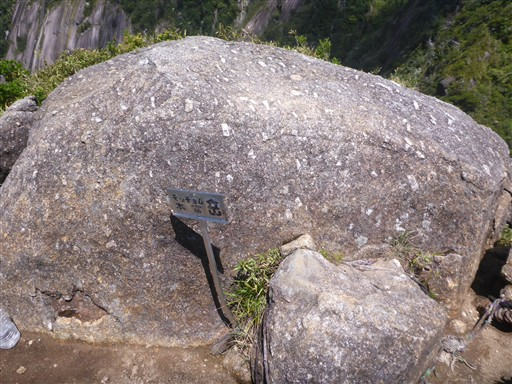
歩いてきた尾根。目の前に見える神山展望所の方が少し標高が高い。
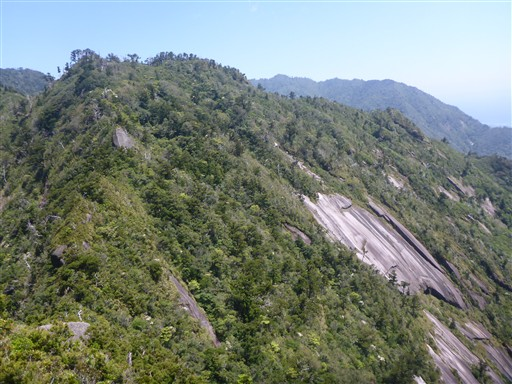
山頂からは最高の展望が広がる。
こんなに海岸線が間近に眺められる山はあまり無いのではないかと思う。
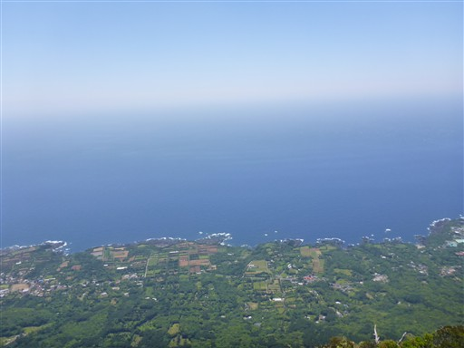
丸い屋久島の形がよく分かる。
目の前には海、背後には岩壁を従えた山、時間は押しているが好展望の山頂でゆっくりする。
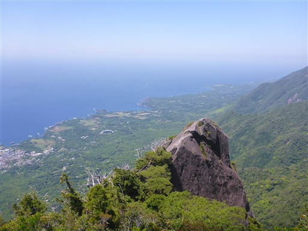
昼食を取ったら急ぎ下山。コースタイムを縮められると思ったが、あまり縮まらなかった。
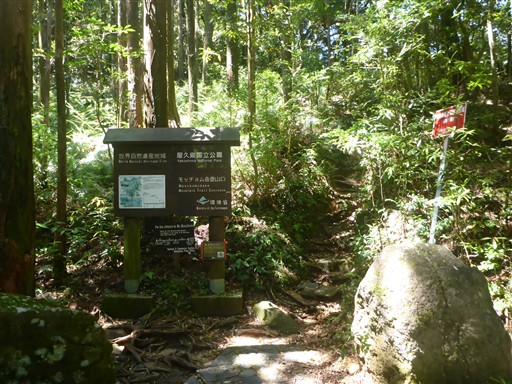
登山口近くにある千尋の滝を見学する。
山頂から見えた岩壁と同じような岩壁が広がっている。
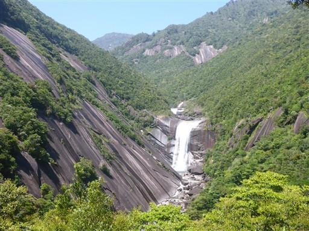
落差60m。水量が多く立派な滝だ。
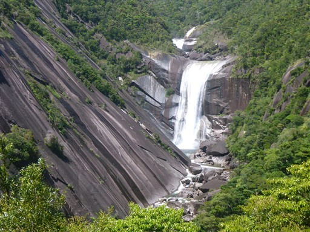
滝のそばまで行ける遊歩道があったらしいが、閉鎖されている。
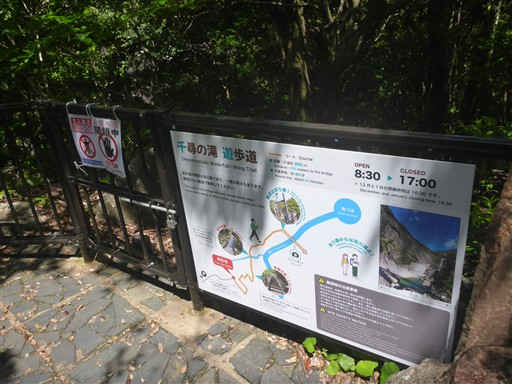
駐車場に戻ってくる。売店の裏に置いておいた荷物を回収。
売店でパウンドケーキを購入。荷物のことは少し気にされていたようだ。
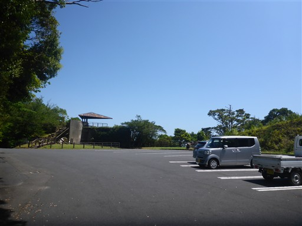
急ぎバス停に向かう。頭上に見えるのはモッチョム岳だろうか？
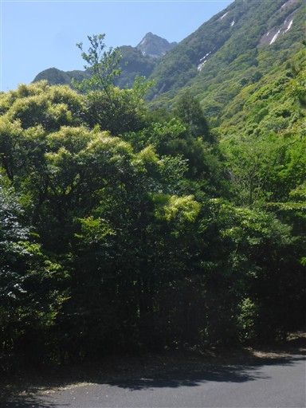
大きな葉。何の葉だろう？
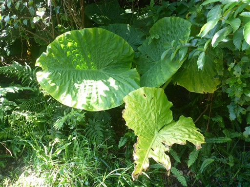
橋から鯛ノ川を見下ろす。ここには川から直接海に注ぐトローキの滝がかかっている。
見えているのは川ではなくてその先の海の辺りだろう。
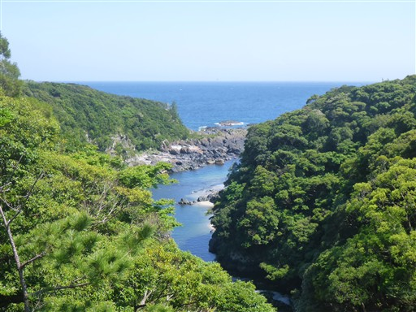
鯛ノ川バス停に到着。標高40m。
トローキの滝展望台はすぐ近くなのだが、バスの時間まであと3分。無理そうなので諦める。
もう1つ観光したいところがあるため、バスに乗ることにする。
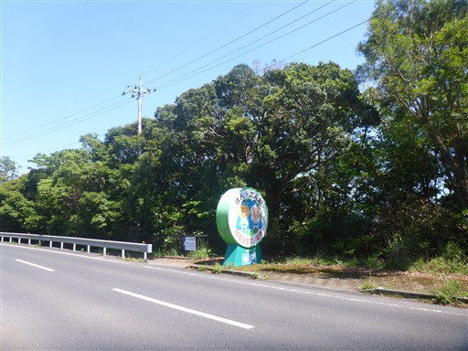
数分バスに乗って訪れたのは猿川ガジュマル。
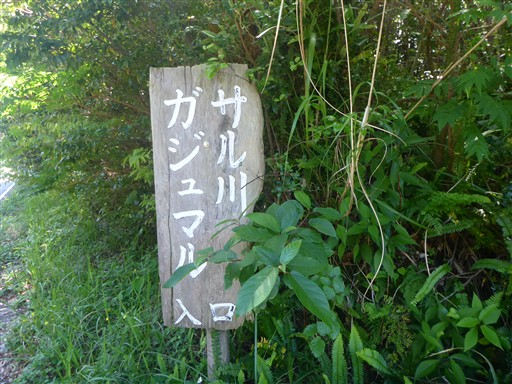
歩くこと数分、車が停まっているので1組観光客がいそうだ。
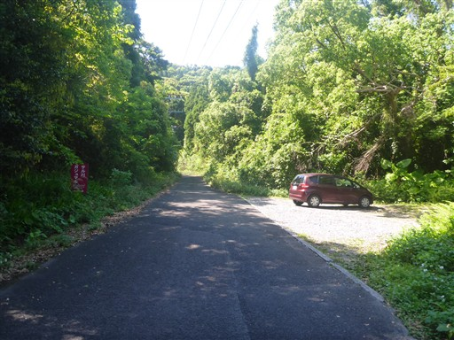
森の中を歩いていく。
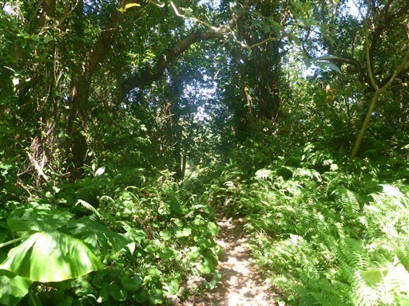
数分歩くとガジュマルが現れる。
中間ガジュマルの方が美しいが、こちらは森の中の野生のガジュマルを眺められる。
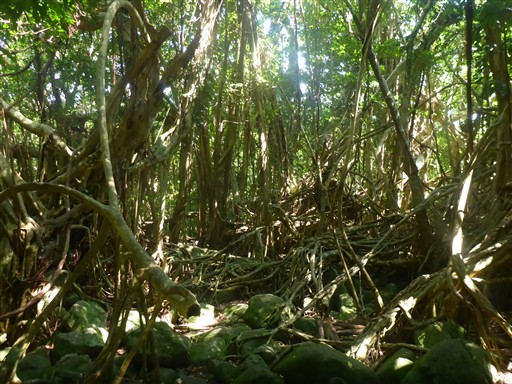
縦横無尽に幹や根が伸びている。ものすごい生命力だ。
ガジュマルを眺めながら売店で購入したパウンドケーキを食べる。
バス停に戻る途中で見かけた幟。
トビウオクレープとは、本当においしいのか・・・？
中橋バス停に戻ってくる。バス停の建物にトビウオの絵が描かれている。
バス待ちの間、海を眺める。今日の海は本当にきれいな青色だ。
反対側は山。海と山に囲まれた素晴らしい景色もこれで見納めだ。
バスに乗って空港に向かう。
途中、ランドセルを背負った小学生がバスを降りたら、
先生と幼稚園児と思われる子供たちが出迎えていた。
ちょっと前に幼稚園を卒園したばかりなのだろう。
屋久島空港に到着。
チェックインを済ませ、荷物を預けたら、売店で土産物を購入。
名残惜しいが、屋久島を後にする。
鹿児島空港に着陸したら、空港の外に出て食楽々で夕食。
本当に久しぶりのまともな食事だ。
飛行機が1時間ほど遅れると連絡があり、暇なので足湯に浸かる。
ずっと登山靴を履いていて圧迫された両足の小指が痛かったのだが、
長湯していると小指がふやけてしまったのか、歩けないほど痛くなってしまった。
飛行機に乗って羽田に向かう。羽田の混雑で空中旋回を繰り返し、予定より2時間遅れ。
疲れる帰宅になってしまった。
屋久島は山も滝も木も、何を見ても素晴らしかった。
天候に恵まれ、運が良ければ登ろうと思っていたモッチョム岳にも登れて最高の展望を満喫できた。
また機会があったら訪れてみたい。